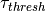
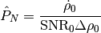

rss_ringoccs.calibration.calc_tau_thresh module¶
- Purpose:
Compute  for use as a proxy for maximum reliable value of optical depth within the diffraction-limited or diffraction-reconstructed profile. This follows [MTR1986] Equations 24 and 26, which define, respectively, the power of the thermal noise

and the threshold optical depth

-
class
rss_ringoccs.calibration.calc_tau_thresh.calc_tau_thresh(rsr_inst, geo_inst, cal_inst, res_km=1.0, Calpha=2.41, constant=False)¶ Bases:
object- Purpose:
- Compute threshold optical depth following
- Arguments:
rsr_inst (object): object instance of the RSRReader class geo_inst (object): object instance of the Geometry class freespace_spm (np.ndarray): locations of freespace where intrinsic spacecraft signal is observed pnorm_fit (np.ndarray): polynomial fit to the freespace power, resampled to raw SPM - Keyword Arguments:
res_km (float): Calpha (float): constant for scaling Bandwidth/SNR ratio. Default is 2.41 for 70% confidence (see [MTR1986]) - Attributes:
snr (np.ndarray): Signal-to-noise ratio SNR0 over the entire occultation. This changes over the occultation because the signal power fluctuates. tau_thresh (np.ndarray): threshold optical depth computed using [MTR1986]
-
find_noise(spm, IQ, dt, df)¶ - Purpose:
- Locate the additive receiver noise within the data set. This is done by computing a spectrogram of the raw complex signal, filtering out the spacecraft signal, and averaging over the frequency and time domains.
- Arguments:
spm (np.ndarray): raw SPM in seconds IQ (np.ndarray): measured complex signal dt (float): sampling spacing in sec of the raw SPM for use in determining the indices of the first and last 1,000 seconds of the occultation in order to determine the location of receiver noise within the data set df (float): sampling frequency in Hz of the IQ